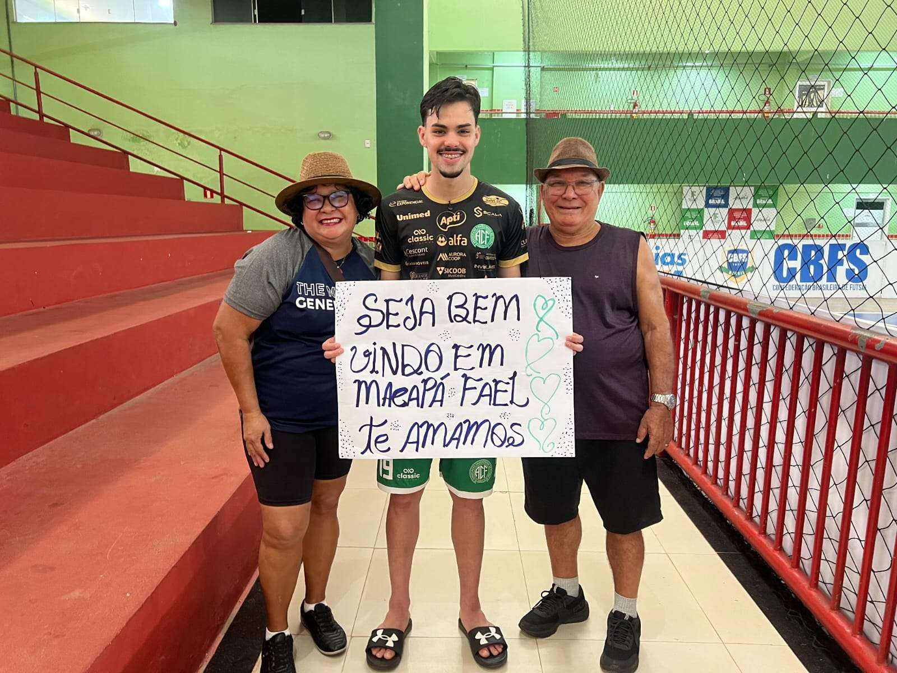

O ala Fael e os seus companheiros atravessaram o País para uma partida histórica da Prefeitura de Chapecó/Chapecoense/Unochapecó no Campeonato Brasileiro de Futsal. O Verdão das Quadras enfrentou uma verdadeira odisseia devido à distância: foram quatro conexões aéreas, um pernoite e um total de 28 horas de viagem até Macapá (AP). O time do Oeste catarinense enfrentou o São José neste sábado (5), pela sexta rodada.
Para o jovem Fael, 21 anos, o compromisso deste fim de semana teve um significado ainda mais especial. Longe de casa, ele pôde reencontrar os tios Suzana e Loeci Lorena, que moram na capital amapaense. Eles marcaram presença no ginásio do IFAP para apoiar o sobrinho, levando um cartaz de boas-vindas com uma mensagem simples e poderosa: "Te amamos". O reencontro foi marcado por emoção, lágrimas e um longo abraço afetuoso antes de a bola rolar.

"A gente estava há um tempo sem vê-lo e sempre existiu a expectativa de assisti-lo jogar. Graças a Deus veio a oportunidade de estarmos aqui para fazer essa homenagem", celebrou a tia Suzana. "É uma emoção muito grande. Poder rever essas pessoas que sempre estarão no meu coração é muito gratificante", retribuiu Fael. O atleta está na Chape Futsal desde o início desta temporada, após passagem pelo Foz Cataratas (PR).
Voltando para casa
Curiosamente, o confronto diante do São José ocorreu em pleno Hemisfério Norte, já que o ginásio do IFAP fica localizado acima da Linha do Equador. a Chapecoense acabou superada pelo placar de 5 a 1, mas continua na zona de classificação às quartas de final, em quinto lugar. O São José conta jogadores de renome como Valdin, Pixote, Canabarro e Simi.
A delegação verde-branca realizou uma atividade regenerativa neste domingo (6), ainda no Amapá. A longa viagem de volta começa nesta segunda-feira (7), com previsão de chegada a Chapecó às 19h50, após três conexões, em Belém (PA), Brasília (DF) e Guarulhos (SP).
Jogos e feijoada
A agenda da Chape Futsal continua intensa nesta semana. O próximo desafio será na quinta (10), às 19h30, diante do Tubarão, no Sul do Estado, onde a equipe defende a liderança da Série Ouro do Catarinense. Na sexta (11), o Verdão enfrenta o Rio do Sul, às 20h, pela ida das quartas de final da Copa SC, no Alto Vale do Itajaí.
Já no sábado (12), ao meio-dia, ocorre a tradicional feijoada do clube, no pavilhão 3 do Parque da Efapi, com ingressos disponíveis pelo site ingressojogo.com.br.